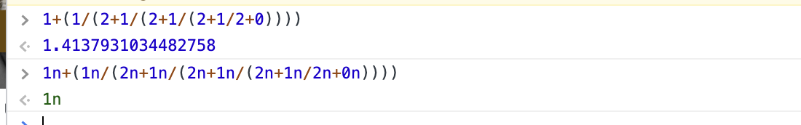
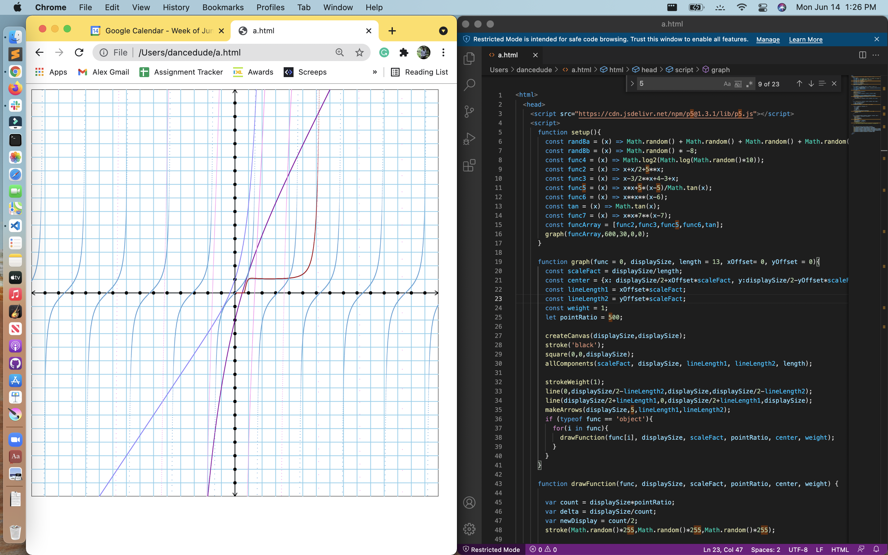

1. Look at the image called continued fraction. Sort of like an infinite repeated decimal, this is an infinite repeated fraction. Those three dots (the ellipsis) go on forever. But let’s calculate an approximation. Evaluate the expression as if the ellipsis has the value zero. Take a screenshot to show your work. You can do it in the JavaScript console with one expression and a whole bunch of parenthesis.


2. In the Moon Unit Zappa question from last week, when she was four years old she had four books. Along these lines, write a JavaScript program that will generate all permutations of the letters a b c d and console.table the result. So we should see abcd, abdc, acbd, ….
function getAllPermutations(string) {
var results = [];
if (string.length === 1) {
results.push(string);
return results;
}
for (var i = 0; i < string.length; i++) {
var firstChar = string[i];
var charsLeft = string.substring(0, i) + string.substring(i + 1);
var innerPermutations = getAllPermutations(charsLeft);
for (var j = 0; j < innerPermutations.length; j++) {
results.push(firstChar + innerPermutations[j]);
}
}
return results;
}
3. Write functions to play rock-paper-scissors. You’ll write three functions for the three players; use the following identifiers to name your functions: crisRPS, alexRPS, kennethRPS . Implement these any way you like, so long as they are capable of returning an object like this: {name: 'cris', rps: 'scissors'} — so in this example crisRPS has been invoked, it tells it’s name (‘cris’), then its rock-paper-scissors value, in this case ‘scissors’. Use whatever strategy you like to generate the rps value. Then write a second function play(func1, func2) that takes two rock-paper-scissors functions and plays them against each other one time. It outputs an object like this {players: 'cris vs alex', result: 'rock rock — draw'} or like this {players 'cris vs alex', result: 'scissors paper — cris wins'}. Play this game 10 times.
function crisRPS(){
a = Math.round(Math.random()*10);
if (a < 3){
return {name: 'cris', rps: 'scissors'};
}
else if (a > 7){
return {name: 'cris', rps: 'rock'};
}
else {
return {name: 'cris', rps: 'paper'};
}
}
function kennethRPS(){
a = Math.round(Math.random()*10);
if (a < 3){
return {name: 'kenneth', rps: 'scissors'};
}
else if (a > 7){
return {name: 'kenneth', rps: 'rock'};
}
else {
return {name: 'kenneth', rps: 'paper'};
}
}
function alexRPS(){
a = Math.round(Math.random()*10);
if (a < 3){
return {name: 'alex', rps: 'scissors'};
}
else if (a > 7){
return {name: 'alex', rps: 'rock'};
}
else {
return {name: 'alex', rps: 'paper'};
}
}
function play(rps1, rps2){
if(rps1().rps == 'paper' && rps2().rps == 'paper'){
return {players: rps1().name + ' vs ' + rps2().name, result: 'paper paper — draw'}
}
if(rps1().rps == 'rock' && rps2().rps == 'rock'){
return {players: rps1().name + ' vs ' + rps2().name, result: 'paper paper — draw'}
}
if(rps1().rps == 'scissors' && rps2().rps == 'scissors'){
return {players: rps1().name + ' vs ' + rps2().name, result: 'scissors scissors — draw'}
}
if(rps1().rps == 'rock' && rps2().rps == 'paper'){
return {players: rps1().name + ' vs ' + rps2().name, result: 'rock paper —' + rps1().name}
}
if(rps1().rps == 'paper' && rps2().rps == 'rock'){
return {players: rps1().name + ' vs ' + rps2().name, result: 'paper rock —' + rps2().name}
}
if(rps1().rps == 'rock' && rps2().rps == 'scissors'){
return {players: rps1().name + ' vs ' + rps2().name, result: 'rock scissors —' + rps1().name}
}
if(rps1().rps == 'scissors' && rps2().rps == 'rock'){
return {players: rps1().name + ' vs ' + rps2().name, result: 'rock scissors —' + rps2().name}
}
if(rps1().rps == 'paper' && rps2().rps == 'scissors'){
return {players: rps1().name + ' vs ' + rps2().name, result: 'scissors paper —' + rps2().name}
}
if(rps1().rps == 'scissors' && rps2().rps == 'paper'){
return {players: rps1().name + ' vs ' + rps2().name, result: 'scissors paper —' + rps1().name}
}
}
4. Look at last week’s homework where you wrote a compare function.
- Run each of part a-d 3 times, capturing all results
- Explain, mathematically, why the theoretical probability for each result is precisely 2/3.
a. done, b. 4/6 = probability in cris and kenneth's dice. 2/3 is the simplification of 4/6
5. Look at last week’s homework, question 8, the easy console work. Use the results you got to make intelligent guesses for the what these values should be, without needing to consult MDN:
- Math.LN2
- Math.LN10
- What is the “LN” for?
0.6, 2.3, natural logarithm
6. Use your graph function to show 5 different functions (on the same graph) that have significant differences to any functions you’ve graphed before. Go for complex and bizarre combinations you haven’t tried before.

7. Use your graph function to show 5 different functions (on the same graph) that you think would be suitable for a guess-the-function game — so maybe a couple really easy ones, and a few medium difficulty ones.
So. It dissapiered. ooohhhhh... spoooooooookeeeeeeeey
8. New logarithm rule:
- from last homework, what was the value of Math.log13(665416609183179841)?
- On Sunday we discussed that the above value is exactly equal to the extra credit question — Math.log10(665416609183179841) / Math.log10(13) — Prove this by evaluating this expression in the JavaScript console.
- Use part b to deduce what the new logarithm rule is. Write down that new logarithm rule. Test it out for a few easy examples. Show your work.
a. 15 b. done c. the natural logorithm is base 10.
9. Have a codecombat contest session with the three of you. Write down a few sentences describing how it went, and what was the most interesting thing you did.
done, it was really fun, to help the boys I mean
10. Please give a brief update on Screepslandia.
It's going well, but I need to unclaim one of the rooms I think.